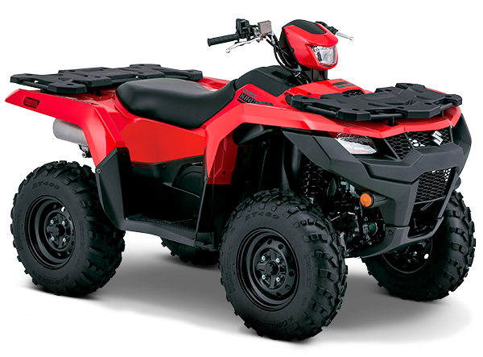

SUZUKI:Kingquad 750

Motor: 4 tiempos, CC: 750, Enfriamiento: Liquida, DOHC,Potencia Máxima: 50cv, Sistema alimentación: Inyección,Capacidad combustible: 17.5,Transmisión: Automática variable con banda (V-belt) Patrón de cambios Automático Caja cambios / Transfer-2 velocidades adelante y reversa / L-H-N-R Transmisión final 2